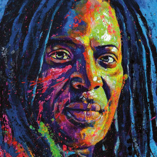
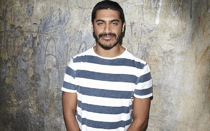
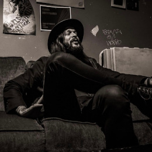
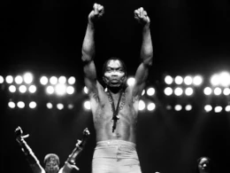

4 vídeos para você apreciar
Temos aqui uma lista com 4 vídeos musicais com diferentes estilos, sendo eles:
African Reggae -
Alpha Blondy
Brazilian samba -
Criolo
American folk/blues/rock/country -
Shawn James
Afro beat -
Fela Kuti



